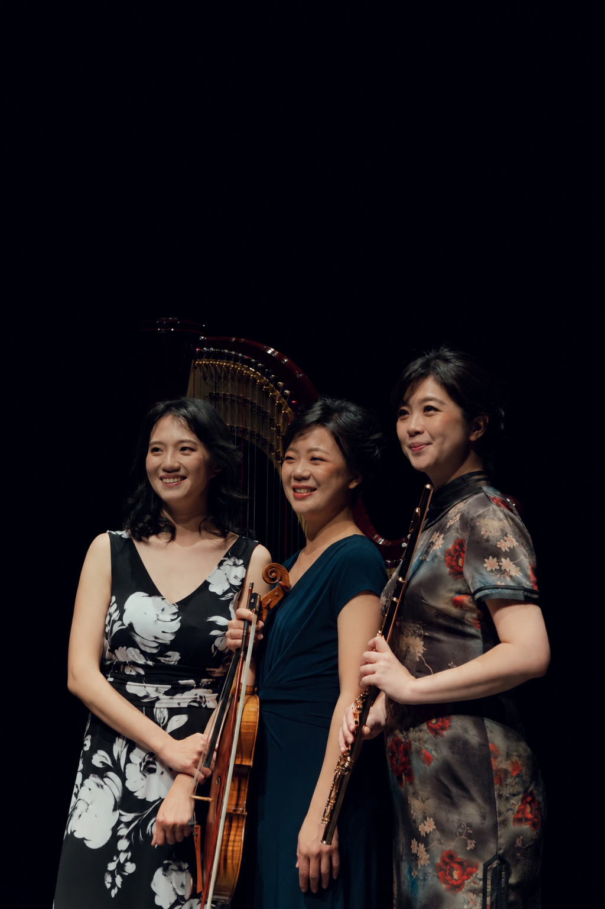

Ensemble in Residence
Formosa Trio

The Formosa Trio, featuring Taiwanese musicians Tze-Ying Wu, viola; Pei-San Chiu, flute; and Chen-Yu Huang, harp, has performed actively together since 2015. Dedicated to expanding and promoting repertoire for this distinctive instrumentation, the ensemble regularly commissions composers to create new works and also creates its own arrangements ranging from classical compositions to Taiwanese folk songs.
The Trio has toured throughout the United States and Taiwan, including a U.S. tour in 2024, and has appeared at flute, harp, and viola conventions and festivals. Recent appearances include the American Harp Society Summer Institute, the National Flute Association Convention, and the American Viola Society Festival. In 2018, the ensemble released its first album, First Impression.
Recent commissions include works by Zhou Tian, Tsung-Jen Hsieh, and Yuchun Hu, continuing the Trio's commitment to expanding the flute, viola, and harp repertoire.
Tze-Ying Wu is Associate Professor of Viola and String Education at the University of Kentucky. Pei-San Chiu is Adjunct Associate Professor of Music in Flute at Indiana University, and Chen-Yu Huang is a harp specialist with Fort Bend Independent School District in Texas and a former Assistant Professor of Harp at Michigan State University.
Performance Videos
Explore selected performances by the Formosa Trio.
Performance 2
Performance 3
Performance 4
Chamber Music for Every Community
As a resident ensemble of Hemiola Chamber Music Initiative, the Formosa Trio shares HCMI's commitment to engaging communities through chamber music and championing new works.
Connect with HCMI